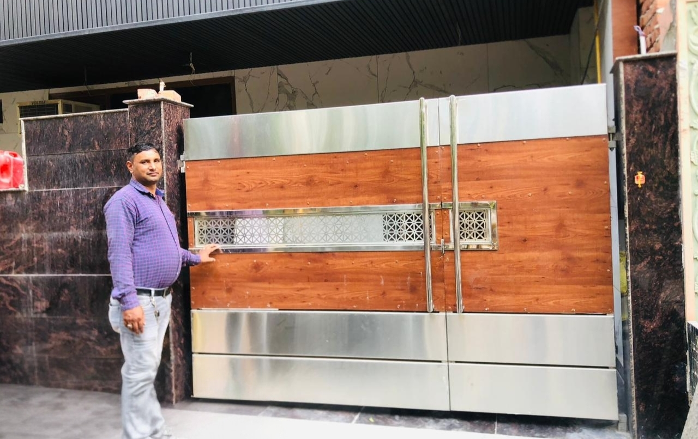
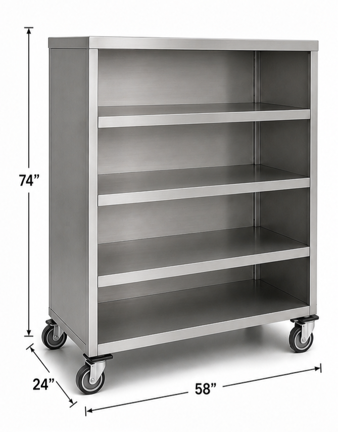
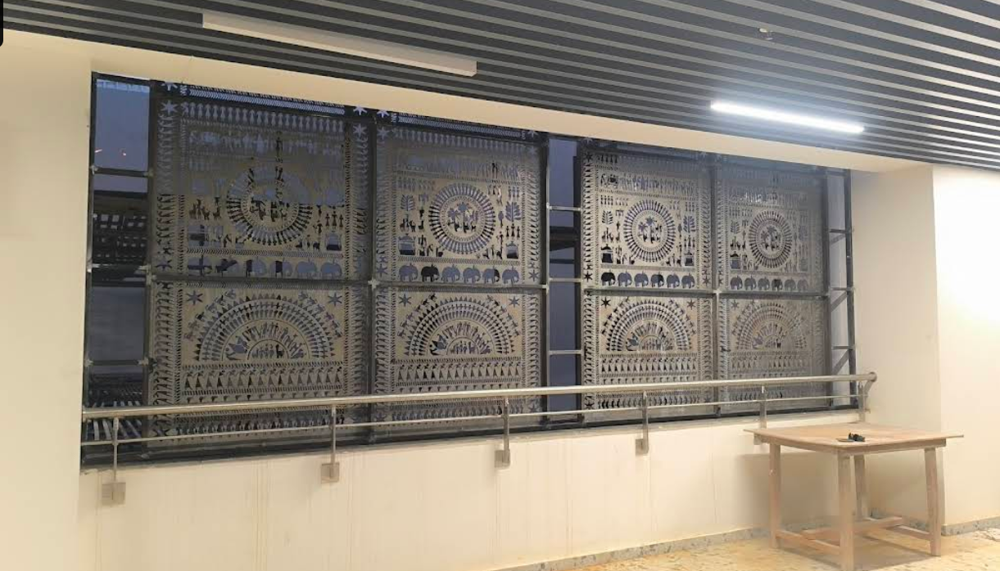

Welcome to AK India Fabricator
We provide the best solutions for your fabrication needs.
We provide the best solutions for your fabrication needs.





Big sheets or bars of metal are cut into the shapes needed.
4. Bending/FormingThe metal is bent or rolled into the right shape using machines.
5. WeldingThe pieces are joined together by melting and fusing them.
6. FinishingThe final product is polished, painted, or coated to look good and prevent rust.
Work Experience: With over 20+ years of experience, AK India Fabricator Pvt. Ltd. has consistently delivered exceptional fabrication services across a wide range of industries, ensuring precision, innovation, and quality in every project we undertake.
Our Expertise: We specialize in industrial metal fabrication, providing high-quality solutions for structural steelworks, architectural components, custom tooling, and much more. Our experienced team uses state-of-the-art machinery to deliver unparalleled results.
Our Vision: To be the leading provider of custom metal fabrication services, delivering innovative and reliable solutions that exceed client expectations.